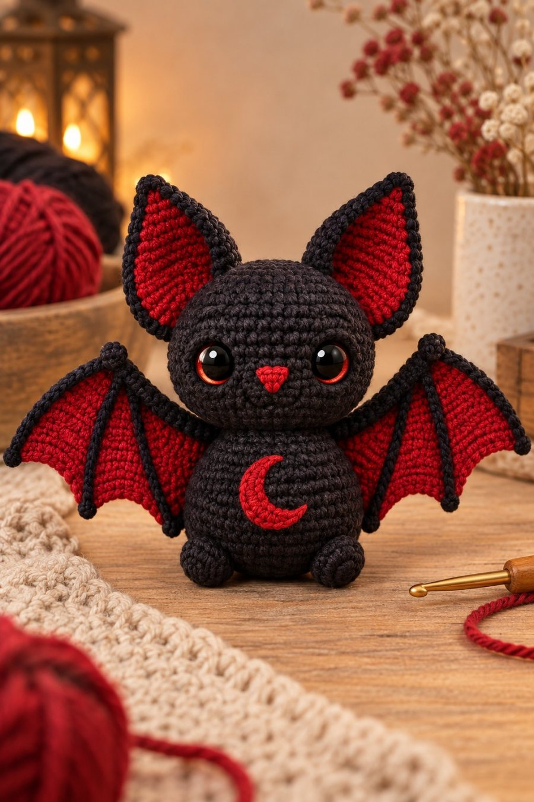

Fledermaus Rubi
Häkelanleitung für eine sitzende Amigurumi-Fledermaus: schwarz, mit roten Flügeln, roten Innenohren und einem kleinen Mond auf dem Bauch. Etwa 10 cm hoch, ohne die Ohren.

So sieht Rubi fertig aus. Sie wird aus einzelnen Teilen zusammengenäht: Kopf und Körper, zwei Ohren, zwei Flügel mit je einem winzigen Knubbel am Handgelenk, zwei Füße und der Mond. Der Kopf ist absichtlich größer als der Körper, das macht sie so pummelig.
Die Anleitung steht in Häkelschrift, also Runde für Runde mit den üblichen Abkürzungen. Die Maschenzahl steht am Ende jeder Zeile in eckigen Klammern. Bis auf eine einzige Reihe pro Flügel ist alles feste Masche.
- Größe
- ca. 10 cm hoch ohne Ohren, ca. 13 cm mit Ohren, Flügelspannweite ca. 17 cm
- Schwierigkeit
- leicht bis mittel
- Zeit
- 5 bis 6 Stunden
- Garn
- Baumwolle, Lauflänge 125 m / 50 g, Nadel 2,5 mm
- Technik
- Spiralrunden, Reihen, eine Zackenreihe, Kettmaschen auf dem Stoff
Online kannst du jede Runde abhaken. Die Häkchen bleiben in diesem Browser gespeichert.
Material
Garn und Zubehör
- Schwarz: ca. 40 g Baumwollgarn, Lauflänge 125 m / 50 g (z. B. Catania). Ein Knäuel reicht.
- Rot: ca. 20 g desselben Garns
- Häkelnadel 2,5 mm. Wer locker häkelt, nimmt 2,25 mm.
- 2 Sicherheitsaugen 12 mm mit roter Iris. Schwarze gehen auch, dann fehlt nur der rote Schimmer.
- Füllwatte, ca. 30 g
- Maschenmarkierer, Stopfnadel, Stecknadeln, Schere
Abkürzungen
| MR | Magischer Ring (Fadenring) |
| Lm | Luftmasche |
| Km | Kettmasche |
| fM | feste Masche |
| hStb | halbes Stäbchen |
| Stb | Stäbchen |
| DStb | Doppelstäbchen (2 Umschläge) |
| zun | Zunahme: 2 fM in dieselbe Masche |
| abn | Abnahme: 2 fM zusammen abmaschen, unsichtbar |
| Rd | Runde, in Spiralrunden ohne Kettmasche |
| R | Reihe, hin und zurück mit Wende-Luftmasche |
| (…) ×n | Klammerinhalt n-mal wiederholen |
| [n] | Maschenzahl am Ende der Runde oder Reihe |
Bevor du anfängst
Alle runden Teile häkelst du in Spiralrunden, also ohne Kettmasche am Ende der Runde. Steck einen Maschenmarkierer in die erste Masche jeder Runde und zieh ihn Runde für Runde mit nach oben, das erspart dir das Zählen. Und häkle fest. Bei Amigurumi darf keine Füllwatte durchscheinen, und ein fester Stoff hält auch die Flügel in Form. Ganz ohne Draht.
Eine Maschenprobe brauchst du nicht. Mit dickerem Garn und passender Nadel wird Rubi einfach größer, mit dünnerem kleiner, die Anleitung bleibt dieselbe.
Eine Zunahme sind zwei feste Maschen in dieselbe Masche. Abnahmen häkelst du am besten unsichtbar: nur in die vorderen Maschenglieder der nächsten beiden Maschen einstechen, Faden holen und beide Schlingen zusammen abmaschen. So entstehen an den Abnahmen keine Löcher, durch die die Watte schaut.
Bei den Teilen in Reihen zählt die Wende-Luftmasche nicht als Masche. Stimmt die Maschenzahl in der eckigen Klammer einmal nicht, ribbel die Reihe lieber gleich auf. Drei Reihen später ist es doppelt so ärgerlich.
Sicherheitsaugen sind nichts für Kinder unter drei Jahren. Für die Kleinen stickst du die Augen mit schwarzem und rotem Garn auf.
1 · Kopf
Schwarz, in Spiralrunden, von oben nach unten. Rd 1 ist der Scheitel. Die Augen kommen nach Rd 18 hinein, solange die Öffnung noch groß genug ist, um die Sicherungen von innen anzudrücken.
- Augen einsetzen: zwischen Rd 12 und 13, mit 7 Maschen Abstand zwischen den beiden Stiften. Erst nur hineinstecken und von vorn anschauen. Weiter auseinander wirkt Rubi erstaunt, enger zusammen eher grimmig. Wenn der Blick passt, die Sicherungen von innen aufdrücken. Die gehen nie wieder ab, also lieber einmal mehr hinschauen. Dann die Nase sticken (siehe unten) und den Kopf fest füllen, in kleinen Portionen, sonst wird er beulig.
- Faden abschneiden, mit der Stopfnadel durch die vorderen Maschenglieder der letzten 6 Maschen fädeln, zuziehen und den Faden im Kopf versenken.
Die Nase
Die Nase ist ein kleines rotes Dreieck mit der Spitze nach unten, mittig zwischen den Augen. Stick mit Rot zuerst waagerechte Stiche über 3 Maschen auf Höhe von Rd 13, darunter über 2 Maschen auf Rd 14 und zuletzt einen kurzen Stich auf Rd 15. Die Stiche dicht nebeneinander legen, bis kein Schwarz mehr durchblitzt. Zwei Lagen sind in Ordnung, die Nase darf ruhig ein wenig hervorstehen. Einen Mund bekommt Rubi nicht. Mit den großen Augen braucht sie keinen.
2 · Körper
Schwarz, in Spiralrunden, von unten nach oben. Rd 1 ist der Boden. Oben bleibt der Körper offen, dort wird später der Kopf angenäht.
- Faden abschneiden, etwa 40 cm zum Annähen hängen lassen. Den Körper fest füllen, besonders den Boden, damit Rubi später gerade sitzt und nicht nach hinten kippt.
3 · Ohren
Rot und Schwarz, 2 Stück. Zuerst ein rotes Blatt in Reihen, dann einmal mit Schwarz außen herum. So entsteht der schmale dunkle Rand, ohne dass du etwas aufnähen musst.
- Faden abschneiden und vernähen. Das rote Blatt ist jetzt etwa 3,5 cm hoch.
- Faden abschneiden, ein langes Ende zum Annähen lassen. Die Maschenzahl muss hier nicht auf die Masche stimmen. Wichtig ist, dass der Rand flach liegt: Wellt er sich, waren es zu viele Maschen, zieht er das Blatt zusammen, zu wenige. An den Abnahmestufen einfach je 1 fM häkeln, der Rand glättet sie.
4 · Flügel
Rot mit schwarzem Rand, 2 Stück. Der Flügel ist ein Drittelkreis in Reihen, in jeder Reihe kommen zwei Maschen dazu. Die Zunahmen sitzen im ersten und im dritten Viertel der Reihe, dadurch wird der Fächer rund und bekommt keine Ecke in der Mitte. R 13 ist die Zackenreihe: hohe Stäbchen an den Spitzen, Kettmaschen in den Tälern. Sie ist die einzige Reihe in der ganzen Anleitung, in der etwas anderes als feste Maschen vorkommt. Danach kannst du wieder abschalten.
- Die 4 Lm am Anfang sind die Flügelspitze. Die beiden anderen DStb sind die Spitzen der mittleren und der unteren Zacke, und die 7 fM am Ende bilden die Kante, die später am Körper anliegt. Faden abschneiden und vernähen.
- Faden abschneiden, etwa 30 cm zum Annähen lassen. Die genaue Zahl ist auch hier Nebensache, Hauptsache der Rand liegt flach. In den Tälern der Zackenreihe darf er leicht spannen, das zieht die Bögen schön nach innen.
Die Fingerlinien
Zwei schwarze Linien laufen vom Magischen Ring zu den Zackenspitzen, die dritte ist die Vorderkante, und die ist ja schon schwarz. Die Linien werden als Kettmaschen auf den Stoff gehäkelt. Leg den schwarzen Faden hinter den Flügel, stich die Nadel von vorn in den MR und hol eine Schlinge nach vorn. Dann immer eine Reihe weiter einstechen, wieder eine Schlinge holen und durch die Schlinge auf der Nadel ziehen. So wandert eine Kette über den Stoff, Reihe für Reihe, bis zur Spitze. Die erste Linie endet an der mittleren Zacke, die zweite an der unteren. Zum Schluss den Faden nach hinten holen und vernähen. Die Kette darf nicht ziehen, sonst wölbt sich der Flügel. Lieber etwas locker.
Das Handgelenk
Schwarz, 2 Stück. Ein Kügelchen, kaum größer als eine Erbse.
- Faden abschneiden, mit der Nadel durch die 6 Maschen fädeln, die Fadenenden hineinstopfen und zuziehen. Der Knubbel kommt auf die Ecke am MR, dort, wo die Fingerlinien zusammenlaufen.
Den zweiten Flügel genauso häkeln, auch den Rand. Nur die Fingerlinien kommen bei ihm auf die andere Stoffseite, dann liegen sie bei beiden Flügeln vorn und die Spitzen zeigen nach außen.
5 · Füße
Schwarz, 2 Stück. Zwei kleine Bohnen.
- Faden abschneiden, langes Ende lassen. Eine Prise Watte hinein, dann die Öffnung flach zusammendrücken. So entsteht die Bohnenform.
6 · Mond
Rot, 1 Stück. Die Sichel biegt sich von selbst, weil auf der einen Seite der Luftmaschenkette fast doppelt so viele Maschen stehen wie Luftmaschen.
- Faden abschneiden, langes Ende lassen. Das Stück mit Stecknadeln zur Sichel legen, die Öffnung zeigt nach rechts wie auf dem Foto, und mit kleinen Stichen rundherum auf die Bauchmitte nähen, ungefähr zwischen Rd 6 und Rd 12 des Körpers. Wer lieber stickt, stickt den Mond mit Plattstichen auf. Sieht genauso gut aus.
7 · Zusammennähen
- Kopf und Körper. Den Körper mit der Öffnung nach oben unter den Kopf setzen, etwa auf Rd 20 bis 21 des Kopfes, und mit Stecknadeln fixieren. Der Kopf darf vorn ein Stück überstehen, das macht Rubi pummelig. Mit dem langen Faden des Körpers rundherum nähen, dabei abwechselnd eine Masche der Körperöffnung und eine Masche des Kopfes fassen. Zwischendurch von vorn schauen, ob der Kopf noch gerade sitzt.
- Ohren. Die Basis jedes Ohrs zu einer kleinen Muschel falten: die beiden unteren Ecken nach hinten zusammenlegen und mit zwei Stichen sichern. Die Ohren oben seitlich auf den Kopf stecken, die Basis zwischen Rd 3 und Rd 8, oben etwa 6 Maschen Abstand zwischen den beiden Ohren. Sie zeigen leicht nach außen, nicht kerzengerade nach oben. Erst stecken, von vorn anschauen, dann annähen.
- Flügel. Der Flügel wird schräg angenäht. Die Kante aus den 7 fM plus Rand liegt am Körper: Die Körperecke, also das Ende der Armkante, sitzt hinten oben an der Schulter, etwa auf Rd 14 des Körpers. Die untere Zacke sitzt vorn seitlich, etwa auf Rd 6. Die Armkante steigt dann schräg nach oben, das Handgelenk mit dem Knubbel landet ungefähr auf Höhe der Augen. Beide Flügel stecken, von vorn und von oben prüfen, ob sie gleich hoch sitzen, dann mit dem schwarzen Faden annähen. Die Kante ruhig ein Stück weit um den Rücken herum nähen, dann stehen die Flügel stabil ab.
- Füße. Vorn unten an den Körper, zwischen Rd 3 und Rd 5, mit etwa 4 Maschen Abstand. Sie stehen nach vorn ab wie zwei kleine Stummel.
- Zum Schluss alle Fäden vernähen und Rubi in Form drücken. Die Ohren ein bisschen zurechtzupfen, die Flügel glattstreichen. Fertig.
Tipps und Varianten
Zum Aufhängen eine Schlaufe aus 25 Lm oben am Kopf zwischen den Ohren annähen. Mit einer Schlaufe zwischen den Füßen hängt Rubi kopfüber, wie eine echte Fledermaus.
Mit Garn der Stärke 4 mm und Nadel 3,5 mm wird sie etwa 15 cm hoch. Mit Häkelgarn Stärke 10 und Nadel 1,5 mm passt sie an den Schlüsselbund.
Statt Rot geht auch Lila oder Orange. Das Schwarz bleibt, sonst ist es keine Fledermaus mehr.
Wer die Flügel stellbar möchte, näht ein Stück Blumendraht entlang der Armkante ein. Nicht bei Kuscheltieren für kleine Kinder.
Zum Mitnehmen
Die komplette Anleitung gibt es als druckfertiges PDF (A4, mit Kästchen zum Abhaken). Online kannst du stattdessen jede Runde direkt hier abhaken.